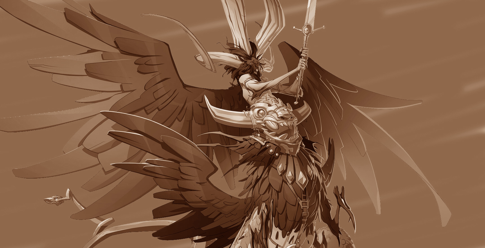

VI. НАЙНИЖЧІ
ЛЕМУР
Розмір: малий

ОПИС:
ㅤ
Лемури з'являються, коли душа смертного зіпсована злом
і заслана навічно до Дев'яти Кіл Пекла.
Найнижчий різновид дияволів, лемури - огидні,
безформні істоти, приречені страждати й мучитися доти,
доки не просунуться до вищої форми диявола, наприклад, до біса.
НУППЕРІБО
Розмір: середній

ОПИС:
ㅤ
Жодною душею не знехтують у Дев'яти Пеклах.
А найжалюгідніших - тих, чиї злі діяння за життя були гіршими, ніж будь-чиї ще,
через власну недбалість і лінощі, - на них чекає доля бути нупперібо.
Ці нікчемні покидьки бездумно волочаться пустирями: сліпі,
розпухлі через свій нескінченний голод, вони жеруть будь-яку гидоту,
яку вони тільки зможуть дістати.
ㅤ
Окремо, нупперібо - жалюгідні тварюки, але вони рідко ходять поодинці
і можуть бути досить небезпечними, якщо зберуться великим натовпом.
Вони збираються разом у скупчення, здатне перекрити важливий прохід, або через цілу ущелину.
Їх оточує жар, який обпалює всіх істот, крім дияволів, що проходять повз них.
ㅤ
Нупперібо не знають нічого, окрім голоду, що рухає ними.
Вони сліпо шукають усе, що зможуть поглинути. Помітивши щось смачненьке,
нупперібо невпинно прямує до своєї жертви, доки або не зжере її, або не буде вбитий,
або не зустріне на своєму шляху іншу смачнішу жертву, що відверне його увагу.
ㅤ
Не цікавлячись нічим, окрім втамування голоду, нупперібо бездумно кориться будь-якому наказу,
який телепатично отримає від будь-якого диявола. Такий сліпий послух робить їх найпростішими
для управління з усіх інфернальних військ. Однак їхня присутність у лавах легіону зовсім
не сприяє підвищенню статусу його командира.
III. МОЛОДШІ ДИЯВОЛИ
БIC
Розмір: крихітний

ОПИС:
ㅤ
Біси можуть бути помічені повсюдно на Нижніх Планах.
Вони працюють на побігеньках у диявольських панів, шпигують за конкурентами,
а також вводять в оману і підбурюють смертних.
Біси з гордістю служитимуть своїм господарям, але на них не можна покластися,
якщо завдання має бути виконане ефективно і швидко.
ㅤ
Біс може набувати тваринного вигляду за своїм бажанням,
але в природному стані він нагадує крихітного червоношкірого гуманоїда з колючим хвостом,
маленькими ріжками і шкіряними крилами. Вони нападають із невидимості,
кусаючими своїм отруйними іклами.
ГОЛЧАСТИЙ ДИЯВОЛ
Розмір: малий
ОПИС:
ㅤ
Спінагони за розміром менші за більшість інших дияволів,
і вони слугують шпигунами та посередниками старших дияволів і архідияволів.
Вони - очі та вуха Дев'яти Пекельних, і навіть ті дияволи, що зневажають фізичну
слабкість спінагонів, ставляться до них, принаймні, з дещицею поваги.
ㅤ
Тіло і хвіст спінагона всіяне голками, а голки з хвоста він може
використовувати як дистанційну зброю. При контакті з ціллю шипи запалюються.
У вільний від доставки повідомлень або збору розвідданих час голчасті дияволи
служать в інфернальних легіонах летючою артилерією, компенсуючи свою відносну слабкість
нападом натовпом. Хоч голчасті дияволи і жадають просування в ранзі та владі,
вони за своєю природою боягузливі і швидко розсіються, якщо бій піде не на їхню користь.
БОРОДАТИЙ ДИЯВОЛ
Розмір: середній (приземкуватий)

ОПИС:
ㅤ
Бородаті дияволи слугують ударною силою для архідияволів, б'ючись пліч-о-пліч
і впиваючись славою битви. Вони відповідають насильством на будь-яку зневагу,
реальну чи уявну, впиваючись жорстокістю, коли їхні зазубрені клинки розрубують ворогів.
МЕРРІГОН
Розмір: середній (приземкуватий)

ОПИС:
ㅤ
Душі полеглих солдатів, найманців і охоронців, які служили злу без жодних застережень,
часто знаходили вічне рабство в Дев'яти Пекельних як меррегони. Ці безликі піхотинці
- пекельні легіонери, яким доручено захищати царство та його правителів від зловмисників.
ㅤ
У меррегонів немає індивідуальності і, отже, немає потреби в обличчях.
У кожного легіонера меррегона є металева маска, прикріплена до його голови.
Маркування на масці вказує на єдині елементи ідентичності власника, які мають значення:
шар Дев'яти Пекла, і якому командиру він служить.
ㅤ
Через їхню непохитну лояльність, меррегони складають основу багатьох захисних свит дияволів.
Вони не ухиляються від будь-якого завдання, незалежно від того, наскільки воно небезпечне.
Якщо їм не наказали відступити, вони не відступлять із бою.
КОЛЮЧИЙ ДИЯВОЛ
Розмір: середній

ОПИС:
ㅤ
Істоти з неприборканими жадібністю і бажаннями,
шипасті дияволи слугують охоронцями для сильніших мешканців Дев'яти Пекел та їхніх скарбниць.
Сяючі очі цього схожого на високого гуманоїда, вкритого гострими колючками, шипами та гачками,
диявола пильно вишукують предмети або істот, які можна б було прибрати до рук. Ці виплодки
готові до будь-якого шансу вступити в бій, якщо перемога обіцяє нагороду.
ㅤ
Шипасті дияволи відомі своєю пильністю, і їх важко застати зненацька,
а ще вони ставляться до своїх обов'язків без нудьги і неуважності. Вони використовують
свої гострі кігті як зброю і кидають вогняні кулі у ворогів, що тікають від них.
ДИЯВОЛ ЛАНЦЮГІВ
Розмір: середній

ОПИС:
ㅤ
Це зловісне породження носить ланцюги. Розлякуючи інших істот моторошним поглядом,
цей диявол оживляє ланцюги, що вкривають його тіло, а також ті ланцюги, що є поруч.
Ціпи, що ожили, вкриваються гаками, лезами і шипами, що розривають ворогів.
ㅤ
Дияволи ланцюгів виступають у ролі тюремників, що насолоджуються болем
і живуть тільки заради того, щоб цей біль завдавати. Це вони катують душі смертних,
замкнені в Дев'яти Пеклах, зганяючи свою садистську лють на жалюгідних лемурах,
у вигляді яких ці душі і з'являються.
КІСТЯНИЙ ДИЯВОЛ
Розмір: середній (приземкуватий)

ОПИС:
ㅤ
Рухомі ненавистю, пожадливістю і заздрістю, кістяні дияволи служать жорстокими
наглядачами Дев'яти Пекл. Вони примушують слабших дияволів до роботи,
отримуючи особливу насолоду, коли їхніх суперників понижують у ранзі.
Водночас вони довго просуваються ієрархією і люто заздрять своїм начальникам,
вислужуючись перед ними, хоч їх це і злить.
II. СТРАШІ ДИЯВОЛИ
РОГАТИЙ ДИЯВОЛ
Розмір: великий
ОПИС:
ㅤ
Рогаті дияволи шалено ледачі, і намагаються не наражати себе на небезпеку.
Ба більше, вони ненавидять і бояться істот сильніших за них самих.
Однак якщо їх достатньо спровокувати або розлютити, лють цих породжень буває жахливою.
ㅤ
Мальбранш зростом приблизно з огра і вкритий твердими як залізо лусочками.
Рогаті дияволи, літаюча піхота пекельних легіонів, виконують накази дослівно.
Їхні величезні крила і гігантські роги являють собою страхітливу картину,
коли вони пікірують з неба, атакуючи смертоносними тризубами і хльостаючи хвостами.
ОРТОН
Розмір: середній

ОПИС:
ㅤ
Коли ерцгерцогу Дев'яти Пекла потрібно вистежити, відшукати істоту, або і те,
і інше, а може навіть і схопити її, то він звертається до ортонів. Ортони -
інфернальні мисливці за головами, які невпинно полюють за своєю здобиччю по всьому мультивсесвіту.
ㅤ
Ортони сумно відомі своїм гострим чуттям. Завдяки своїй здатності ставати невидимим,
ортону вдається раптово напасти на здобич, яка нічого не підозрює. Однак, якщо на нього нападуть,
то ортон виходить із невидимості, і тому найкращий захист проти ортона - це рішуча контратака.
ㅤ
Ортони понад усе цінують небезпечні погоні та гострі відчуття від боїв віч-на-віч.
Насамперед ортони залишаються вірними своєму ерцгерцогу, однак, якщо в них немає ніяких термінових доручень,
вони можуть попрацювати на будь-кого, хто запропонує їм спіймати перспективну здобич,
яка змогла б битися з ними на рівних. Оскільки вони мандрують багатьма місцями,
немає кращих провідників по шарах Дев'яти Пекла, ніж ортони.
ЕРИНІЯ
Розмір: середній

ОПИС:
ㅤ
Найпрекрасніші й найчарівніші з усіх молодших і старших дияволів - це еринії, дисципліновані й люті воїни.
Пікіруючи з небес, вони несуть швидку смерть істотам, які зрадили їхніх володарів або порушили едикти Асмодея.
Еринії виглядають як гуманоїди чоловічої або жіночої статі з постатями, гідними статуй,
і великими пернатими крилами. Більшість одягнена в стилізовану броню і рогаті шоломи,
і користується вишуканими мечами та луками. Дехто має при собі мотузки обплутування,
щоб знерухомлювати сильних супротивників.
ㅤ
Легенди свідчать, що перші еринії були ангелами, які занепали з Верхніх Планів
через якийсь проступок або спокусу. Еринії завжди користуються можливістю бути хибно прийнятими за ангела,
щоб легше виконати свою місію із завоювання або спокушання.
КРИЖАНИЙ ДИЯВОЛ
Розмір: великий

ОПИС:
ㅤ
Крижані дияволи зазвичай мешкають на холодних шарах Стігії і Канії, і служать командирами
інфернальних армій, вихлюпуючи свої гнів і обурення на менших дияволів. Жадаючи влади своїх
командирів - виплодків пекла, - вони наполегливо працюють заради підвищення, вбиваючи ворогів
Дев'яти Пекельних і захоплюючи для своїх господарів-архідияволів якомога більше душ.
ㅤ
У крижаних дияволів, що нагадують зовні велетенських двоногих комах, пазуристі руки й ноги,
потужні мандибули та довгі хвости, вкриті бритвено-гострими шипами. Деякі з них озброєні зазубреними списами,
чий крижаний дотик робить ворогів безпорадними в бою.
АМНІЗУ
Розмір: величезний

ОПИС:
ㅤ
Амнізу ведуть пекельні легіони в битву і командують вартовими на Вратах Пекла.
Амнізу зарозумілі, схильні до насильства і нещадні, але, при цьому, вони вельми вправні
в тактиці і безвідмовно вірні, що і цінують ерцгерцоги Пекла.
ㅤ
Деякі амнізу виконують небезпечне завдання - стежити за річкою Стікс із фортець
уздовж розбитих берегів річки, де вона протікає через Діс і Стігію. Душі, що прибувають
у вигляді лемурів, не мають жодної особистості чи спогадів; вони спонукувані лише бажанням вчинити зло.
Амнізу, що патрулює цю область, впроваджує правила Дев'яти Пекельних у жалюгідні мізки новоприбулих
і розміщує цих лемурів у легіони.
ПЕКЕЛЬНИЙ ДИЯВОЛ
Розмір: великий

ОПИС:
ㅤ
Беззаперечні володарі більшості інших дияволів, виплодки пекла служать безпосередньо ерцгерцогам і
ерцгерцогиням Дев'яти Пекельних, і виконують їхні бажання. Ці могутні дияволи - генерали Дев'яти Пекельних,
що ведуть у битву інфернальні легіони.
ㅤ
З їхнім гіпертрофованим почуттям власної зверхності та права керувати іншими,
виплодки пекла формують таку собі гротескну аристократію інфернального царства.
Ці домінантні тирани-маніпулятори плетуть усередині складної та небезпечної політики Дев'яти Пекельних
змови з метою знищення всього, що стоїть між ними та їхніми бажаннями.
ㅤ
Виплодок пекла являє собою величезне чудовисько з подібним до батога хвостом і величезними крилами,
в які він загортається як у плащ. Його тіло вкрите найміцнішою лускою, а з ікластої пащі капає отрута,
яка може звалити з ніг навіть найміцнішу смертну істоту. Виплодки пекла безстрашні в бою,
вони намагаються зійтися в поєдинку сам-на-сам із найсильнішим ворогом, демонструючи всім свою перевагу і
гордовитість, яка не дозволяє їм допустити й думки про можливість поразки.
ㅤ